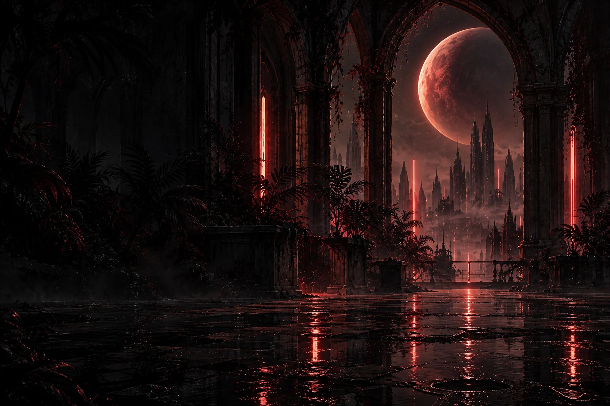

About
Curiosity, made tangible.
I like turning half-formed ideas into real things: tools, experiments, interfaces, physical objects, and occasional oddities that are interesting simply because they can exist.
This is the shelf where I keep the ones worth sharing.
